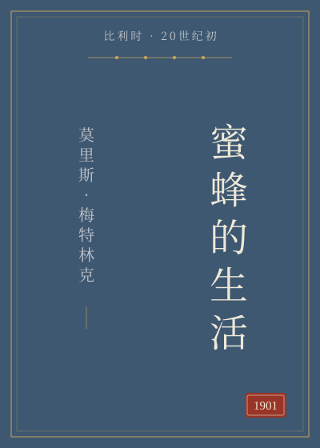
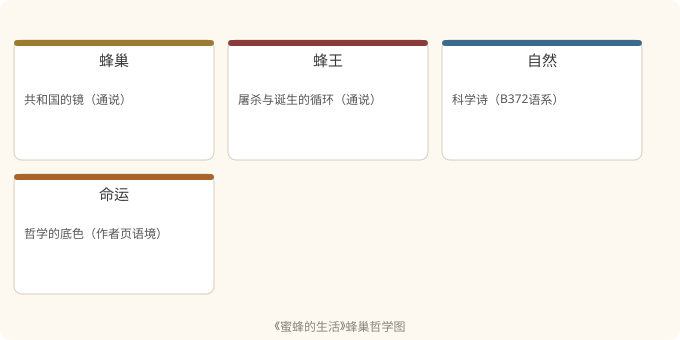

蜜蜂的生活
一、基本信息
| 作者 | 莫里斯·梅特林克 |
|---|---|
| 成书/出版 | 1901年（Britannica B372：La Vie des abeilles (1901)） Maurice Maeterlinck — Encyclopaedia Britannica（百科全书） |
| 国别/地区 | 比利时 |
| 时代 | 近代 · 20世纪初 |
| 体裁 | 散文集（自然随笔） |
| 语言 | 法语 |

《蜜蜂的生活》蜂巢哲学图（主题·结构图）
二、创作背景
Britannica（B372）：La Vie des abeilles——梅特林克作品列表（与 Le Trésor des humbles 1896 并列）。
Britannica（B372）：梅特林克——1911诺奖；象征主义戏剧家。
题材（通说待核）：蜂巢的'哲学'——蜂王、雄蜂与工蜂的乌托邦观察。
三、内容脉络
（通说待核）蜂巢的观察：分蜂、蜂王的诞生与屠杀。
（通说待核）'蜜蜂的生活'作为人类社会的镜。
四、主要人物表
| 人物 | 身份 | 说明 |
|---|---|---|
| 蜂王 | 巢的君主 | （通说待核） |
五、主题与艺术特点
- 蜂巢的'共和国'（通说待核）。
- 自然随笔的科学诗（B372 语系）。
- '命运'的哲学（作者页语境）。
六、影响与评论
- Britannica：La Vie des abeilles (1901)（B372）。
Maurice Maeterlinck — Encyclopaedia Britannica（百科全书） - Britannica：1911诺奖（B372 交叉）。
Maurice Maeterlinck — Encyclopaedia Britannica（百科全书）
七、阅读建议
难点
- 养蜂学的术语。
- '拟人'的限度。
- 《蜜蜂的生活》中译本（人民文学等——通说待核）。
- 法文原版（公有领域）。
梅特林克散文首选；与《青鸟》对读。
八、待核实
- 篇目结构核对（通说）。
- 1901年出版细节待核。
- '拟人化'限度待核。